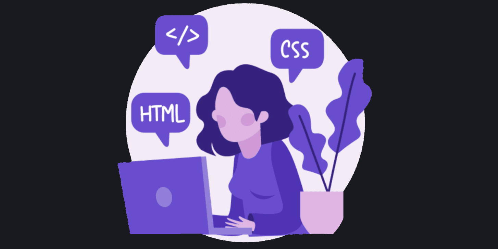

Le BTS SIO

Le Brevet de Technicien Supérieur aux Services Informatiques aux Organisations, s'adresse à ceux qui
souhaitent se former en deux ans aux métiers de l'informatique. Pour par la suite intégrer
directement le marché du travail ou continuer des études, dans ce domaine.
Il existe deux
options à ce BTS ;
L'option SLAM
L’acronyme SLAM signifie « Solutions Logicielles et Applications Métier ».
Voici des précisions sur cette formation et ses débouchés.
L’option SLAM est destinée aux étudiants qui s’orientent vers les métiers liés à la conception et la
maintenance de programmes applicatifs. Grâce à des cours spécifiques, les diplômés seront capables
de gérer un parc informatique ou d’administrer un réseau au sein d’une entreprise.
Ils pourront également gérer l’intégration, la sécurisation et la configuration des serveurs, mais
aussi des postes clients et des équipements d’interconnexion.
Voici les débouchés avec un BTS SIO SLAM:
- Développeur d'applications informatiques
- Développeur informatique
- Analyste d'applications ou d'études
- Analyste programmeur
- Chargé d'études informatiques
- Informaticien d'études
- Programmeur analyste
- Programmeur d'applications
- Responsable des services applicatifs
- Technicien d'études informatiques
L'option SISR
L’acronyme SISR signifie « Solutions d’infrastructure, systèmes et réseaux ».
Voici quelques
indications sur cette seconde option du BTS SIO. L’option SISR est destinée aux étudiants qui
s’orientent vers les métiers liés à la conception et la maintenance d’infrastructures réseaux.
Assurer la sécurité, la maintenance et l’installation des
réseaux et des équipements informatiques font partie des principales missions des futurs
administrateurs, techniciens ou pilotes d’exploitation.
Des cours plus généraux viendront compléter la formation et apporter des compétences plus
généralistes, permettant ainsi aux diplômés d’être opérationnels dans n’importe quelle entreprise.
Voici les débouchés d'un BTS SIO SISR:
- Technicien de production
- Technicien d’infrastructure
- Technicien réseau et télécoms
- Technicien systèmes et réseaux
- Administrateur systèmes et réseaux
- Support systèmes et réseaux
- Pilote d’exploitation
- Informaticien support et déploiement
Présentation
Enchantée! Je suis Hella NACEUR, agée de 20 ans.
Je travaille depuis 2 ans sur l'obtention de
mon BTS SIO option SLAM au sein du Lycée Turgot ce situant à Paris dans le
3ème arrondissement.
J’ai vite été attirée par l’informatique et
les nouvelles technologies. C’est tout naturellement que je me suis tournée vers ces études.
Compétences

HTML / CSS
PHP
JavaScript
Python
MySQL
Linux
Projets
Sur cette page vous trouverez les projets que j'ai mené durant mon parcours informatique.
Mes rapports de stage
Lors de mon BTS j'ai effectué deux stages, un pour chaques années.
Mes projets scolaires
Epreuve E4
Veilles technologiques
La veille technologique est indispensable. Elle permet d’être à jour sur tout les systèmes
technologiques, ainsi que d’obtenir des informations sur les concurrents, l’actualité, etc.
Cependant, la veille demande beaucoup de temps et d’investissement car des nouvelles
innovations et
informations apparaissent chaque jour.
Les Inteligences artificielles
L'intelligence artificielle (IA) est un processus d'imitation de l'intelligence humaine qui
repose sur la création et l'application d'algorithmes exécutés dans un environnement
informatique dynamique. Son but est de permettre à des ordinateurs de penser et d'agir comme
des êtres humains.
Pour y parvenir, trois composants sont nécessaires :
Des systèmes informatiques
Des données avec des systèmes de gestion
Des algorithmes d'IA avancés (code)
Pour se rapprocher le plus possible du comportement humain, l'intelligence artificielle a besoin
d'une quantité de données et d'une capacité de traitement élevées.
L’IA se retrouve implémentée dans un nombre grandissant de domaines d’application.
L'IA dans le domaine de la santé
L'intelligence artificielle (IA) joue un rôle important dans le domaine de la santé en
améliorant la qualité des soins et en permettant une prise de décision plus rapide et plus
précise.
Diagnostic médical : L'IA peut aider les médecins à diagnostiquer les maladies en utilisant
des algorithmes de reconnaissance de motifs pour analyser les images médicales, les
enregistrements de signes vitaux et les dossiers médicaux électroniques.
Recherche médicale : L'IA peut aider à accélérer la découverte de nouveaux médicaments et à
améliorer les essais cliniques en aidant à prédire les résultats et à optimiser les
protocoles.
Surveillance des patients : L'IA peut surveiller les patients à distance pour détecter les
signes de détérioration de leur état de santé et les alertes médicales appropriées.
Amélioration de l'efficacité : L'IA peut aider à optimiser les processus de soins de santé
en automatisant certaines tâches administratives, telles que la gestion des dossiers
médicaux et les tâches de codage.
Bien que l'IA puisse apporter de nombreux avantages au domaine de la santé, il est important de
s'assurer qu'elle est utilisée de manière responsable et éthique pour éviter les risques pour la
vie privée et la sécurité des données. De plus, il est crucial de s'assurer que l'IA ne remplace
pas les soins médicaux humains et qu'elle soit utilisée pour les compléter plutôt que pour les
remplacer.
Mon outil de veille principal a été Google Alerts avec comme Mots-clés : "IA", "Intelligence artificielle" , "Machine learning".
Contact
Certifications
Certification Sololearn : PHP en cours d'acquisition !